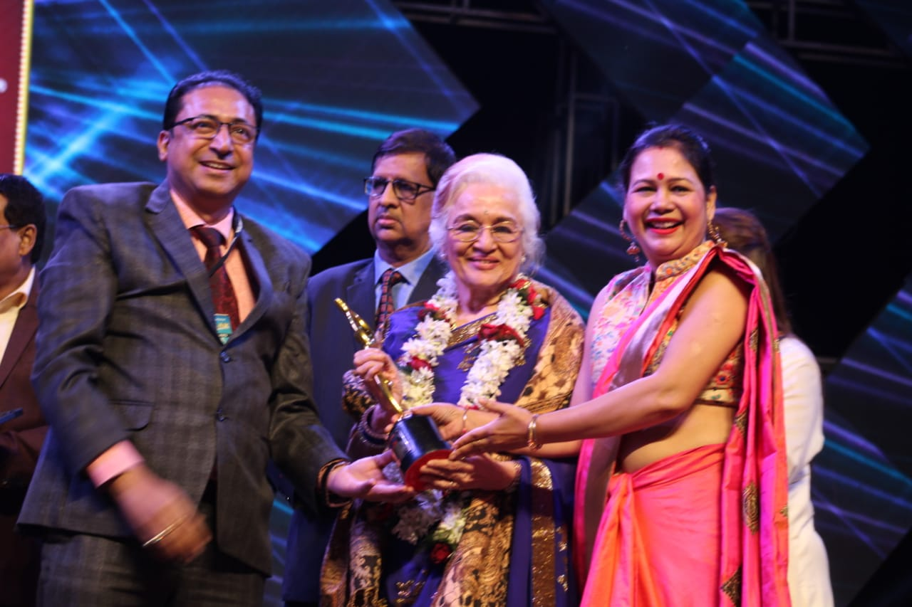

Posted at Date: January 22, 2019
Photo by : Sandip Dutta
27th Kalakar Awards indeed had all the
glamorous showstoppers
The 27th Kalakar Awards organised by Kalakar Parivaar Foundation on Sunday 20th January, 2019 was celebrated amidst much excitement at Science City Auditorium. Among the members, Ashok Kalanauria,Deepak Bahl,Wasim Kapoor,R K Johri,Goutam Ghosh were present to grace the occasion. Ace Director Goutam Ghosh was right to point out,"I have seen and witnessed so many award ceremonies. But the journey of Kalakar Awards has been unique. Kudos to the members for making it big every year.".
The highlight of the evening was indeed the presence of Legendary Bollywood actress Asha Parekh. Along with Bengali actress Chitra Sen, she was accorded with the 'living legend' award for invaluable contribution to Indian cinema. Among other recipients were Prosenjit Chatterjee, Abir Chatterjee, Rajnandini Paul, Priyanka Sarkar and others. National award winning actor Riddhi Sen was indeed ecstatic and said,"I am indeed thankful to the entire Kalakar Parivaar Foundation." Chitra Sen, a common face in Bengali films and serial for the last four decades remarked,"It is indeed a great feeling when you are recognised for your hard work. I am thankful to all my co actors, colleagues and unit members. This award will motivate me in the days to come." There is no denying the fact that both Naakul Mehta and Shivangi Joshi, two popular faces in Indian TV circuit, were accorded with loud cheers. Arshi Khan's presence indeed added much glamour quotient to the event. Nikita, Miss Nepal 2017, was visibly so happy with the proceedings. She went on to say," I am super happy to come here. All credit goes to the Kalakar Parivaar. I hope to come here next year again." There were superb performances from leading singers and dancers. No doubt, the 27th Kalakar Awards indeed had all the glamorous showstoppers.